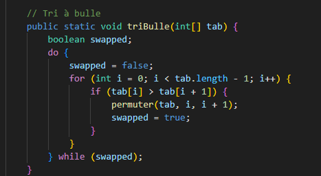
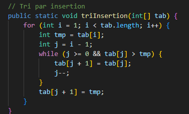
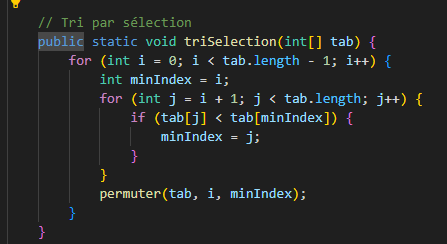

Description
Ce projet a pour but de comparer plusieurs algorithmes de tri. Il met en œuvre différents algorithmes, tels que le tri à bulles, le tri par insertion et le tri par sélection, et mesure leur performance en termes de temps d'exécution et de complexité.
Types de tris présentés
-
Tri à bulles :
Algorithme simple qui compare chaque paire d’éléments adjacents et les échange si nécessaire. Il répète ce processus jusqu’à ce que la liste soit triée. Facile à comprendre mais peu efficace pour de grandes listes. -
Tri par insertion :
Construit la liste triée élément par élément en insérant chaque nouvel élément à la bonne position. Efficace pour les petites listes ou les listes presque triées. -
Tri par sélection :
Sélectionne à chaque itération le plus petit élément restant et le place à la bonne position. Simple mais peu performant pour de grandes listes.



Fonctionnalités
- Comparaison des temps d’exécution des différents tris
- Analyse de la complexité
- Visualisation des résultats
Technologies utilisées
- JAVA